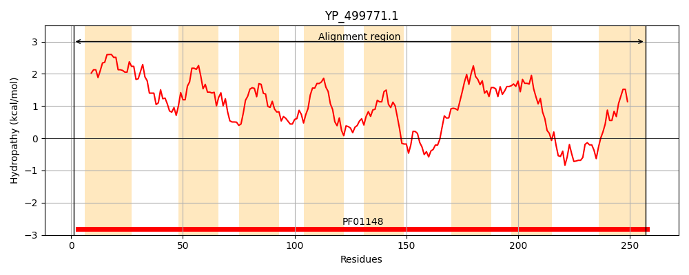
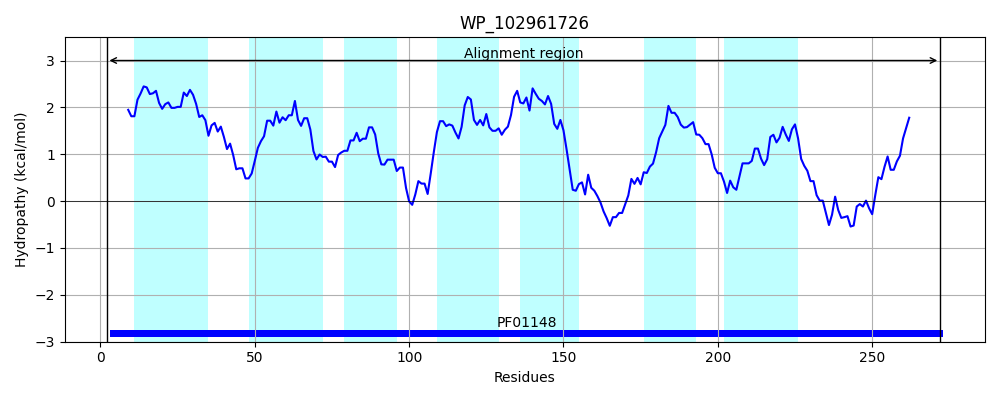
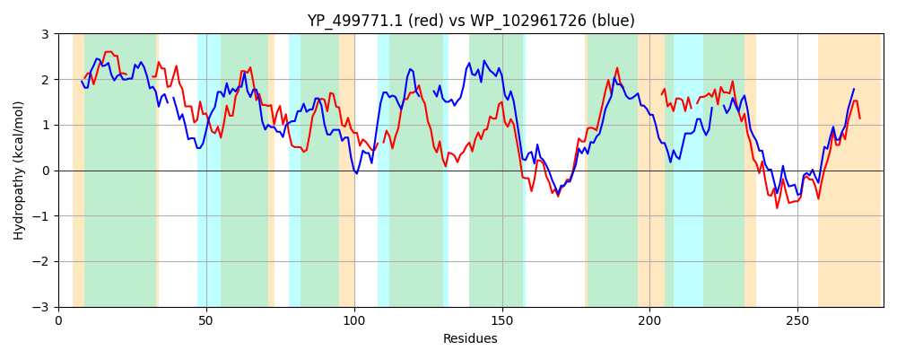

Hit Accession: WP_102961726
Hit TCID: 9.B.273.1.2
Hit Description: gnl|BL_ORD_ID|21691 gnl|TC-DB|WP_102961726.1|9.B.273.1.2 phosphatidate cytidylyltransferase [Burkholderia cenocepacia]
Mach Len: 279
e:0.000000
Query TMS Count : 8
Hit TMS Count: 7
TMS-Overlap Score: 5.600000
Predicted Substrates:None
BLAST Alignment:
Score: 255 , Bit scores: 102 bits, E-value: 3.6e-26, Alignment length: 279, Percentage identity: 32
Query: 1 MKVRTLTAIIALIVFLPILLKGGL--------VLMIFANILALIALKELLNMNMIKFVSVPGLISAVGLIIIMLPQHAGPWVQVIQLKSLIAMSFIVLSYTVLSKNRFS-FMDAAFCLMSVAYVGIGFMFFYETRSEGLHYILYAFLIVWLTDTGAYLFGKMMGKHKLWPVISPNKTIEGFIGGLFCSLIVP------------LAMLYFVDFNM-NVWILLGVTLILSLFGQLGDLVESGFKRHFGVKDSGRILPGHGGILDRFDSFMFVLPLLNILL 257
+K R +TAI+ L V LP+ L L V+++FA L +L + + V L A + + + P + L+ F + L+ + F+ AA ++ A + R+ G+ ++L L+VWL D GAY GK GK KL ISP K+ EG IGG F ++V L + + M W L +L + +GDL ES KR GVKDS +LPGHGG+LDR D+ + VLPL +LL
Sbjct: 2 LKTRVITAIVMLAVLLPVTLFAPLAGFGALIGVVLVFA-AWEWARLLKLGGAGPVVYALVAALALAATAPLGVDAAASRPLFMAAGVFWLLVGPFALRRKPALAGGVWRPFLLAAGLVVFAAC----WHALVAARALGVPFVLSLLLVVWLVDIGAYFAGKAFGKRKLAITISPGKSWEGAIGGWFAVMVVAGVAMAVHAFEPTLFSAFAARYGMPGAWAAL---TLLVAYSVIGDLFESLLKRQAGVKDSSGLLPGHGGVLDRVDALLPVLPLAMLLL 272 | Protein Hydropathy Plots: |
|---|
|  |  |
Pairwise Alignment-Hydropathy Plot:
|
|---|
|  |